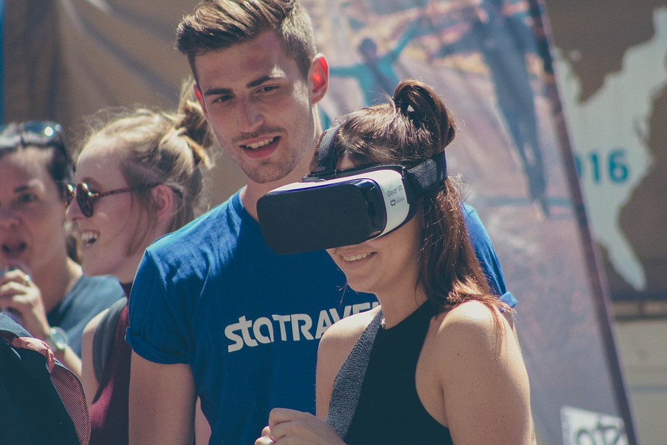

Wirtualna rzeczywistość

Rzeczywistość wirtualna (ang. virtual reality), fantomatyka – obraz sztucznej rzeczywistości stworzony przy wykorzystaniu technologii informatycznej. Polega na multimedialnym kreowaniu komputerowej wizji przedmiotów, przestrzeni i zdarzeń. Może on reprezentować zarówno elementy świata realnego (symulacje komputerowe), jak i zupełnie fikcyjnego (gry komputerowe science-fiction). TechnologiaNa obecnym poziomie rozwoju technologii komputerowej rzeczywistość wirtualną uzyskuje się głównie poprzez generowanie obrazów i efektów akustycznych. Rzadziej stosowane są doznania dotykowe, a nawet zapachowe czy smakowe. Dodatkowo technologia ta umożliwia interakcję ze środowiskiem symulowanym przez komputer poprzez różnego rodzaju manipulatory. Warto zwrócić uwagę na rozróżnienie pomiędzy rzeczywistością wirtualną (środowisko w pełni wykreowane) a rzeczywistością rozszerzoną (środowisko łączące świat realny i elementy wykreowane). |

Kluczem było zrozumienie fizjonomii człowieka. Każdy element rzeczywistości poznajemy za pomocą zmysłów, konieczne było więc wprowadzenie takich rozwiązań, które pozwoliłyby je oszukać. Najpopularniejszym z nich są specjalne okulary, które prezentują wybrany obraz na ekranie, a jednocześnie są zabudowane po bokach – dzięki czemu niemalże odcinają nas od prawdziwego świata. Twórcy VR musieli wziąć pod uwagę także inne czynniki, jak to że zasięg ludzkiego wzroku obejmuje prawie 180° czy to, że szukamy potwierdzenia widzianego obrazu za pomocą zmysłu słuchu – jeśli te sygnały są sprzeczne, dochodzi do zjawiska powszechnie znanego jako choroba lokomocyjna. Kolejnym wyzwaniem była pełna sprawność systemu – oprogramowanie musi reagować na wszystkie działania użytkownika w czasie rzeczywistym, aby zagwarantować mu przyjemne i naturalne doświadczenie. Regularnie pojawiają się także nowe rozwiązania wspierające technologię VR jak słuchawki, specjalne bieżnie czy rękawiczki, które dodatkowo pobudzają nasze zmysły, pozytywnie wpływają na jakość doznania, a także wspierają tworzenie iluzji rzeczywistości. Mówiąc najprościej: VR przedstawia nam stworzone komputerowo środowisko, które możemy odkrywać, a także wchodzić w interakcję z pewnymi jego elementami. Obiekty w technologii VR są prezentowane w skali 1:1, mają więc rzeczywiste wymiary. Widziany przez nas obraz zmienia się natomiast w zależności od naszego ruchu – możemy podziwiać wirtualny świat z różnych perspektyw, np. jeśli obrócimy głowę lub przykucniemy. |

Wirtualna rzeczywistość jest wykorzystywana przede wszystkim w rozrywce, prezentując filmy 360° czy jako akcesoria uzupełniające do gier video. Możemy już nie tylko brać udział w grze, widząc wirtualny świat na ekranie, ale praktycznie stać się jego częścią. Virtual reality znajduje swoje zastosowanie także m.in. w medycynie, sztuce czy architekturze architekturze. VR jest idealnym rozwiązaniem w przypadkach, gdy realizacja w rzeczywistości mogłaby być niezwykle droga lub szczególnie niebezpieczna. Można ją więc wykorzystywać np. do szkolenia przyszłych pilotów czy prowadzenia zajęć z chirurgii na studiach medycznych. W takich sytuacjach virtual reality umożliwia zyskanie prawdziwego i cennego doświadczenia w wirtualnym i maksymalnie bezpiecznym świecie. W większości przypadków jest to też najbardziej ekonomiczne rozwiązanie. |